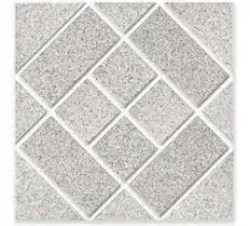

Piso Cerâmico Externo Antiderrapante Pedra
Descrição do Produto
Garanta segurança e beleza para suas áreas externas com o Piso Cerâmico Antiderrapante Pedra. Sua textura robusta proporciona maior aderência, mesmo em áreas molhadas, sendo ideal para calçadas, varandas, garagens e áreas de piscina. O design imita a pedra natural, conferindo um visual rústico e elegante.
Detalhes Técnicos
- Código: PCE-008
- Dimensões por Peça: 50cm x 50cm
- Espessura: 9mm
- Material: Cerâmica
- Acabamento: Antiderrapante (Grip), Textura de pedra
- Indicação de Uso: Pisos em áreas externas residenciais e comerciais.
- PEI (Resistência à Abrasão): 4 ou 5 (dependendo do modelo específico)
- Absorção de Água: BIIa (entre 3% e 6%)
- Unidade de Venda: Metro quadrado (m²)